Katalog Manga
Ada 50 judul manga. Klik tombol "Lihat Detail" untuk membaca sinopsisnya.
Manga tidak ditemukan. Coba kata kunci lain.

One Piece
Eiichiro Oda | Adventure
Monkey D. Luffy berlayar bersama kru Topi Jerami untuk mencari harta karun legendaris bernama One Piece dan menjadi Raja Bajak Laut.
Tahun terbit: 1997 | Status: Ongoing
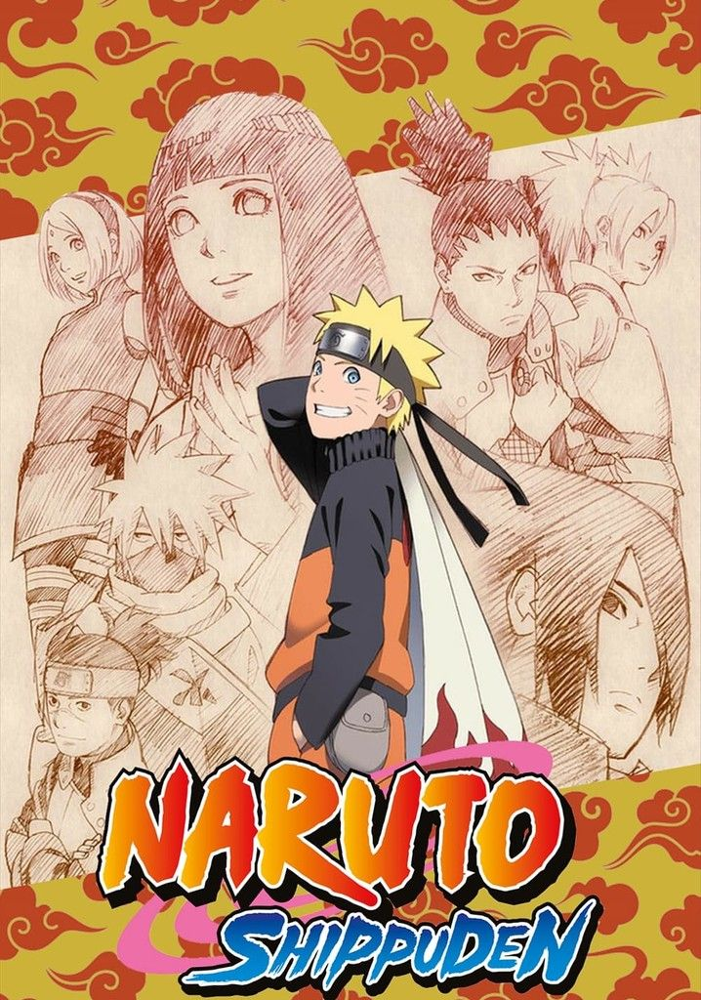
Naruto
Masashi Kishimoto | Action
Naruto Uzumaki adalah seorang ninja muda yang bercita-cita menjadi Hokage dan mendapatkan pengakuan dari orang-orang di desanya.
Tahun terbit: 1999 | Status: Completed
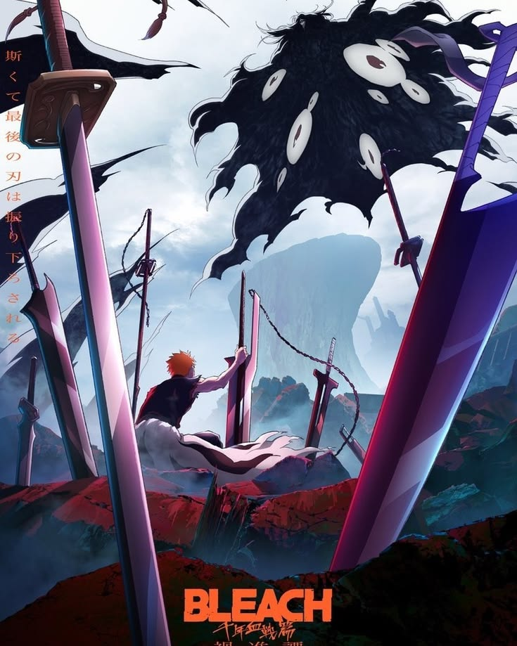
Bleach
Tite Kubo | Action
Ichigo Kurosaki memperoleh kekuatan Shinigami dan harus melindungi manusia dari roh jahat serta menghadapi berbagai ancaman.
Tahun terbit: 2001 | Status: Completed

Dragon Ball
Akira Toriyama | Action
Son Goku memulai petualangan untuk mengumpulkan Dragon Ball. Perjalanannya membawanya bertemu teman dan lawan yang kuat.
Tahun terbit: 1984 | Status: Completed

Demon Slayer
Koyoharu Gotouge | Fantasy
Tanjiro Kamado menjadi pemburu iblis setelah keluarganya diserang dan adiknya, Nezuko, berubah menjadi iblis.
Tahun terbit: 2016 | Status: Completed
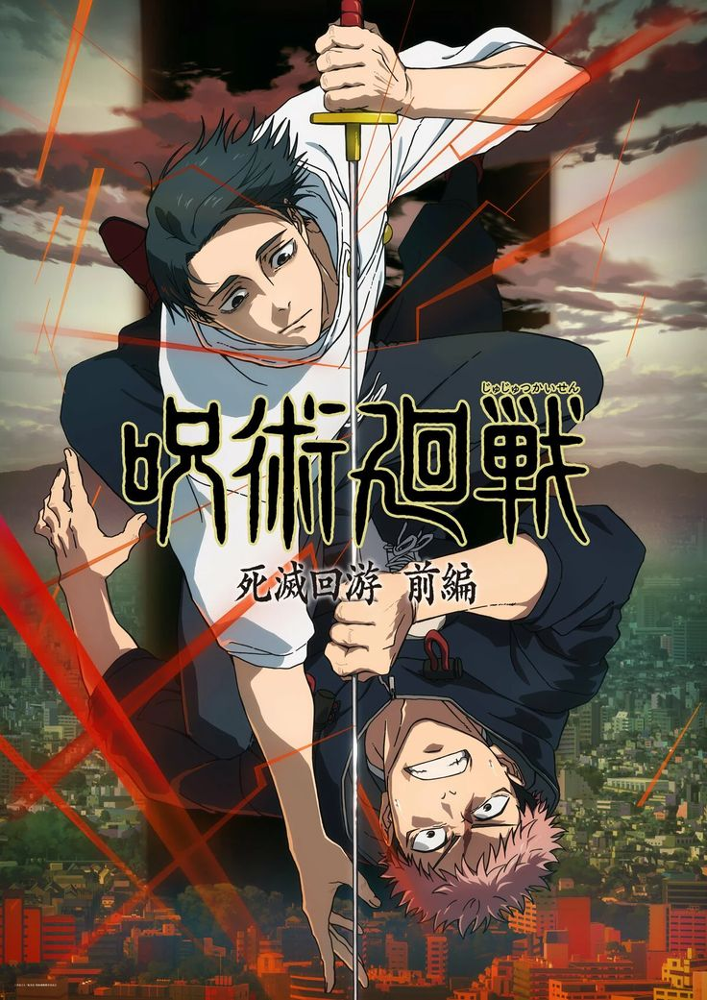
Jujutsu Kaisen
Gege Akutami | Supernatural
Yuji Itadori terlibat dalam dunia penyihir jujutsu setelah menelan benda terkutuk dan menjadi wadah Sukuna.
Tahun terbit: 2018 | Status: Completed

Attack on Titan
Hajime Isayama | Action
Eren Yeager berjuang melawan para Titan yang mengancam umat manusia di balik tembok raksasa.
Tahun terbit: 2009 | Status: Completed

Death Note
Tsugumi Ohba | Mystery
Light Yagami menemukan buku misterius yang dapat membunuh siapa pun yang namanya ditulis di dalamnya.
Tahun terbit: 2003 | Status: Completed
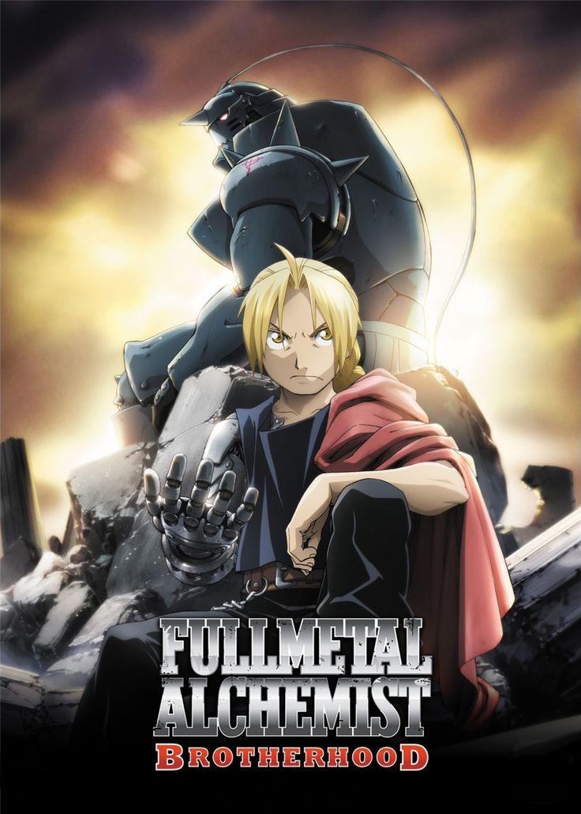
Fullmetal Alchemist
Hiromu Arakawa | Adventure
Edward dan Alphonse Elric mencari Philosopher's Stone untuk mengembalikan tubuh mereka setelah eksperimen alkimia yang gagal.
Tahun terbit: 2001 | Status: Completed

Hunter x Hunter
Yoshihiro Togashi | Adventure
Gon Freecss mengikuti ujian Hunter demi menemukan ayahnya dan menjelajahi dunia yang penuh tantangan.
Tahun terbit: 1998 | Status: Hiatus
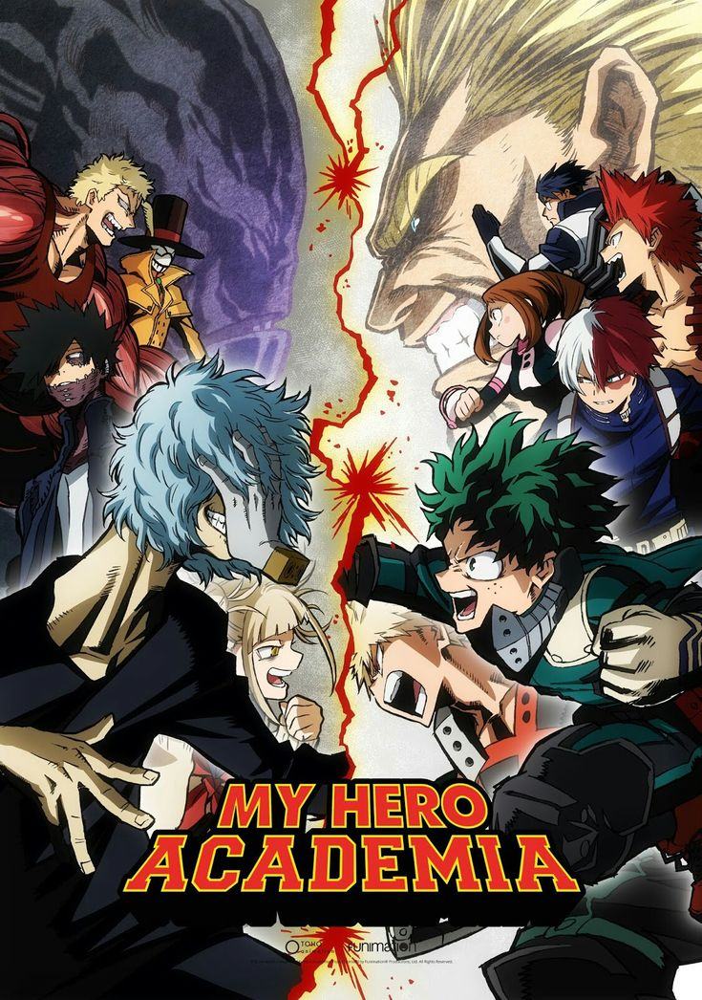
My Hero Academia
Kohei Horikoshi | Action
Izuku Midoriya bermimpi menjadi pahlawan di dunia ketika sebagian besar manusia memiliki kekuatan khusus bernama Quirk.
Tahun terbit: 2014 | Status: Completed
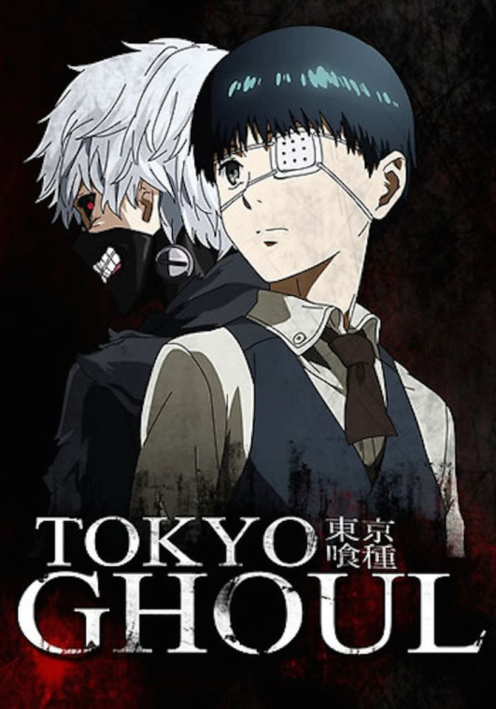
Tokyo Ghoul
Sui Ishida | Horror
Kehidupan Ken Kaneki berubah setelah ia menjadi setengah ghoul dan harus menghadapi konflik antara manusia dan ghoul.
Tahun terbit: 2011 | Status: Completed
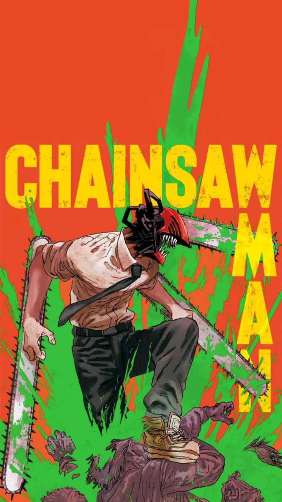
Chainsaw Man
Tatsuki Fujimoto | Action
Denji hidup dalam kemiskinan bersama iblis gergaji mesin bernama Pochita sebelum terlibat dalam pekerjaan pemburu iblis.
Tahun terbit: 2018 | Status: Ongoing
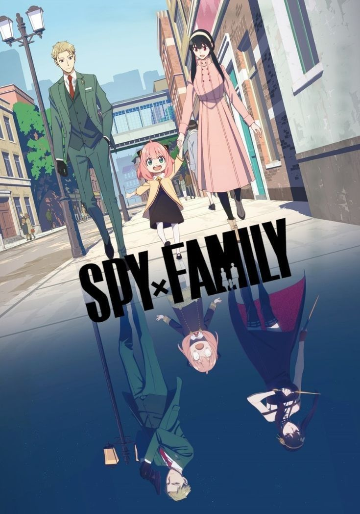
Spy x Family
Tatsuya Endo | Comedy
Seorang mata-mata membentuk keluarga palsu untuk menjalankan misi rahasia, tanpa mengetahui rahasia yang disimpan anggota keluarganya.
Tahun terbit: 2019 | Status: Ongoing
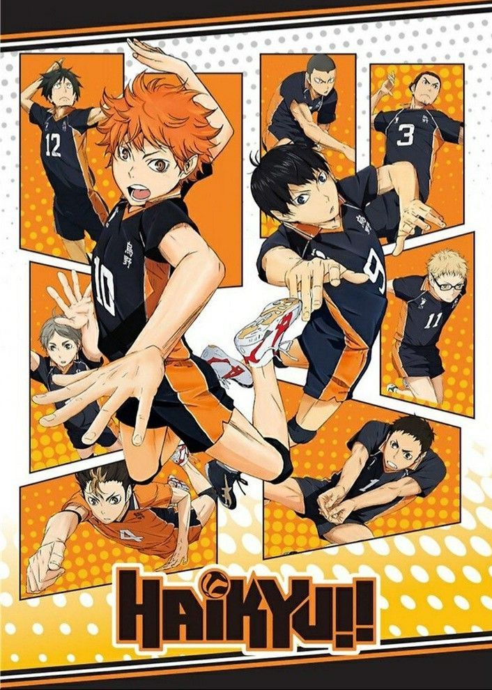
Haikyu!!
Haruichi Furudate | Sports
Shoyo Hinata berusaha menjadi pemain voli hebat meski memiliki postur tubuh yang lebih pendek dari kebanyakan pemain.
Tahun terbit: 2012 | Status: Completed

Slam Dunk
Takehiko Inoue | Sports
Hanamichi Sakuragi mulai mengenal basket setelah bergabung dengan tim sekolah dan menemukan semangat baru dalam olahraga.
Tahun terbit: 1990 | Status: Completed

Blue Lock
Muneyuki Kaneshiro | Sports
Sejumlah striker muda mengikuti program pelatihan ekstrem untuk membentuk penyerang terbaik bagi tim nasional Jepang.
Tahun terbit: 2018 | Status: Ongoing
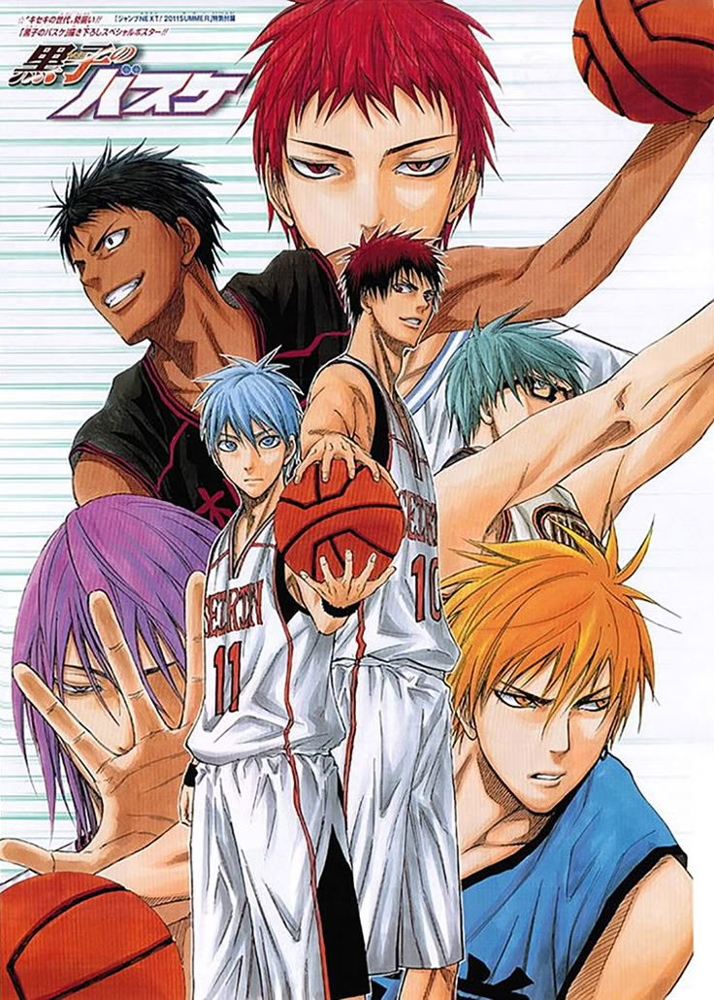
Kuroko's Basketball
Tadatoshi Fujimaki | Sports
Tetsuya Kuroko bergabung dengan tim basket SMA Seirin dan bekerja sama dengan Taiga Kagami untuk menghadapi pemain-pemain hebat.
Tahun terbit: 2008 | Status: Completed
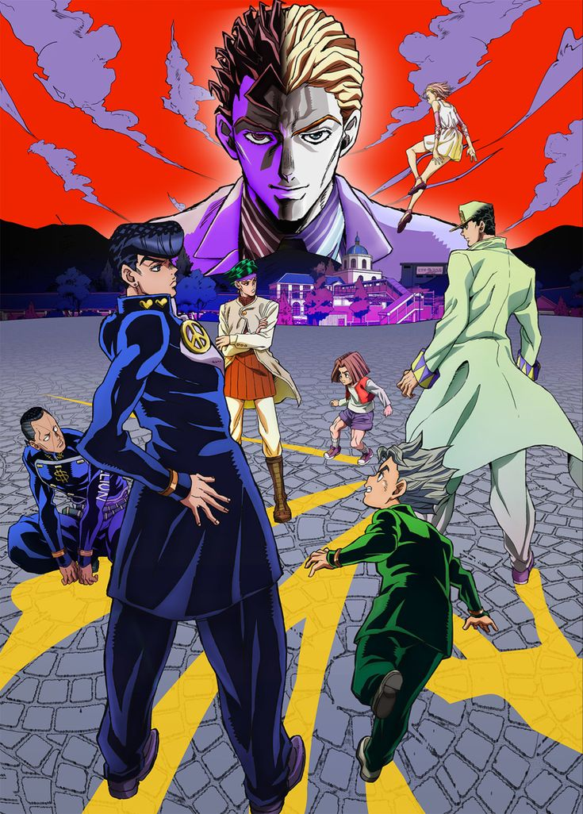
JoJo's Bizarre Adventure
Hirohiko Araki | Adventure
Kisah lintas generasi keluarga Joestar yang menghadapi musuh dan kejadian supernatural dengan kemampuan unik.
Tahun terbit: 1987 | Status: Ongoing
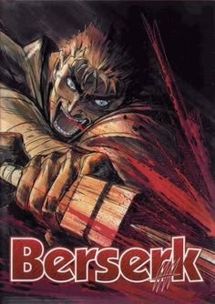
Berserk
Kentaro Miura | Fantasy
Guts, seorang pendekar pedang, menjalani perjalanan penuh konflik, pengkhianatan, dan perjuangan di dunia fantasi yang kelam.
Tahun terbit: 1989 | Status: Hiatus
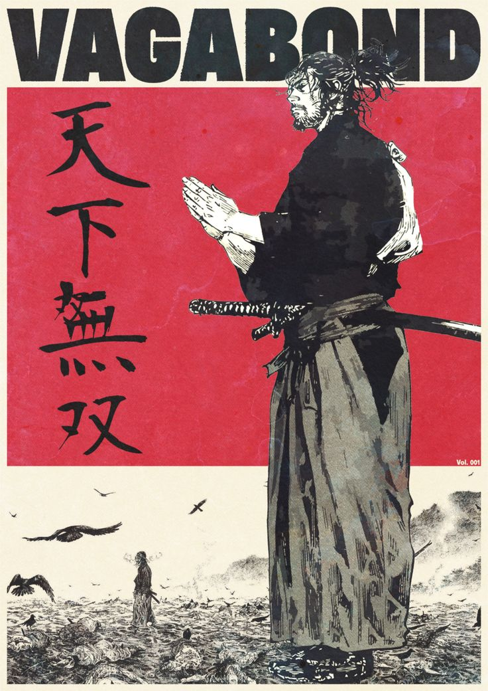
Vagabond
Takehiko Inoue | Drama
Terinspirasi dari kehidupan pendekar Miyamoto Musashi, manga ini mengikuti perjalanan seorang samurai mencari makna kekuatan.
Tahun terbit: 1998 | Status: Hiatus
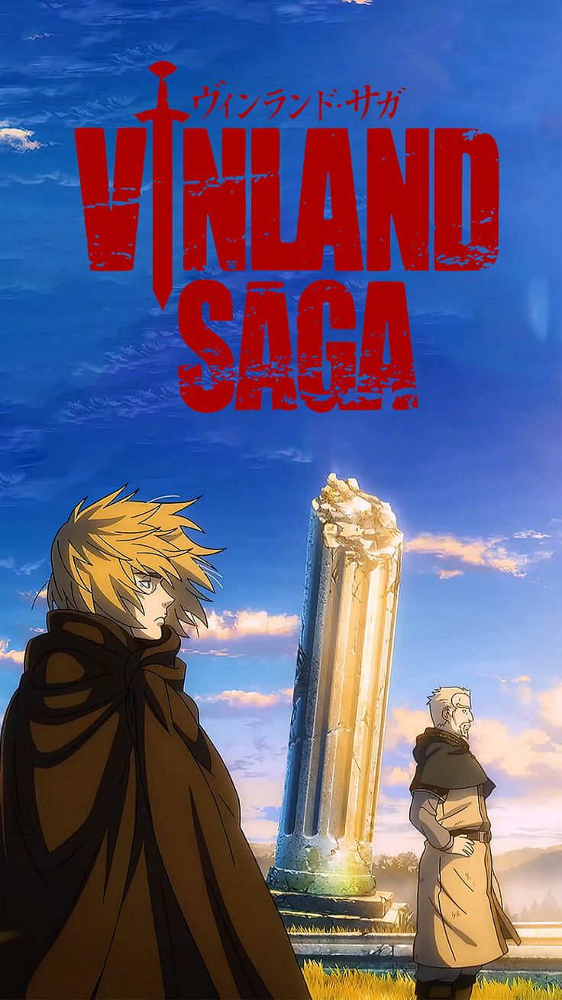
Vinland Saga
Makoto Yukimura | Adventure
Thorfinn tumbuh di tengah peperangan bangsa Viking dan menjalani perjalanan panjang untuk menemukan tujuan hidupnya.
Tahun terbit: 2005 | Status: Completed
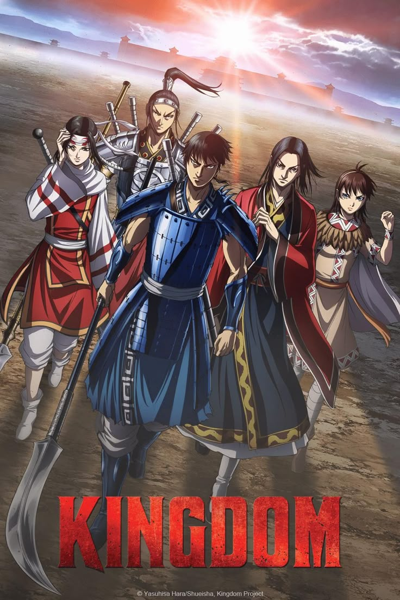
Kingdom
Yasuhisa Hara | Action
Berlatar masa Negara-Negara Berperang di Tiongkok, Shin bercita-cita menjadi jenderal besar.
Tahun terbit: 2006 | Status: Ongoing

Dr. Stone
Riichiro Inagaki | Adventure
Senku berusaha membangun kembali peradaban manusia dengan ilmu pengetahuan setelah seluruh umat manusia membatu.
Tahun terbit: 2017 | Status: Completed
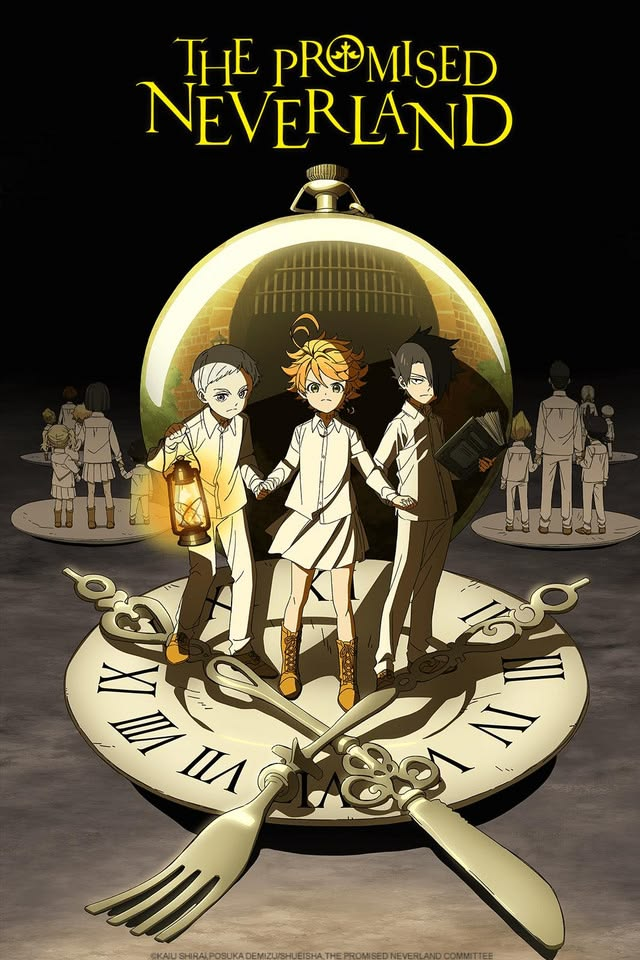
The Promised Neverland
Kaiu Shirai | Mystery
Sekelompok anak di panti asuhan menemukan rahasia mengerikan tentang tempat tinggal mereka dan merencanakan pelarian.
Tahun terbit: 2016 | Status: Completed
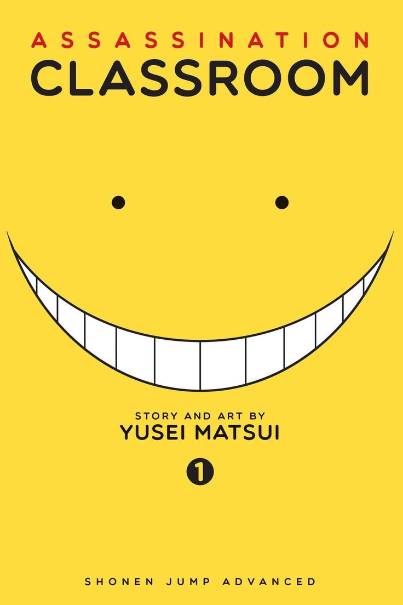
Assassination Classroom
Yusei Matsui | Comedy
Satu kelas mendapat tugas membunuh guru mereka yang memiliki kekuatan luar biasa sebelum bumi terancam.
Tahun terbit: 2012 | Status: Completed
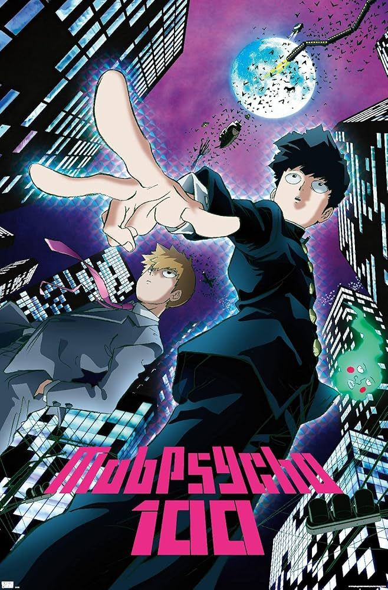
Mob Psycho 100
ONE | Supernatural
Shigeo Kageyama, siswa dengan kekuatan psikis besar, berusaha menjalani kehidupan normal dan memahami perasaannya.
Tahun terbit: 2012 | Status: Completed
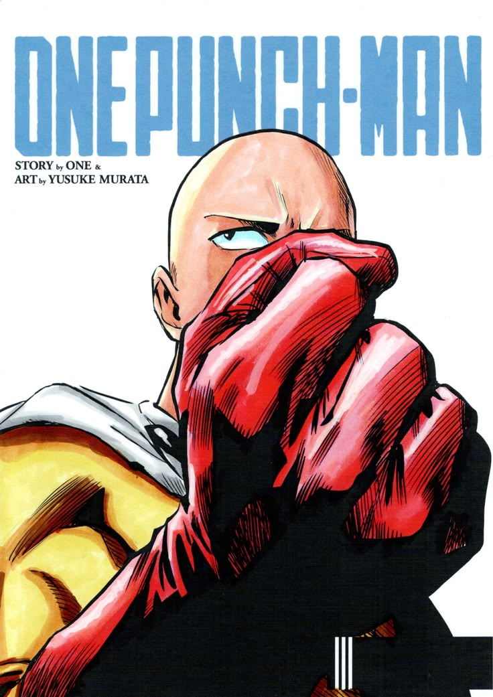
One Punch Man
ONE | Action
Saitama menjadi pahlawan yang mampu mengalahkan musuh hanya dengan satu pukulan, tetapi justru merasa bosan.
Tahun terbit: 2012 | Status: Ongoing
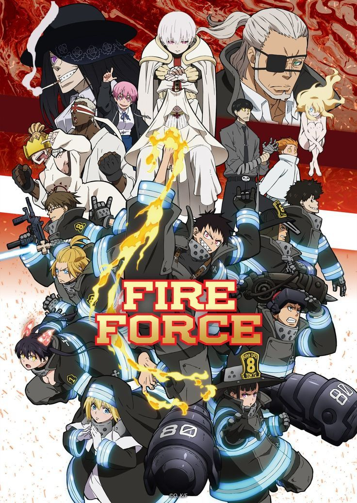
Fire Force
Atsushi Ohkubo | Action
Shinra Kusakabe bergabung dengan pasukan pemadam khusus untuk melawan fenomena manusia yang terbakar secara spontan.
Tahun terbit: 2015 | Status: Completed
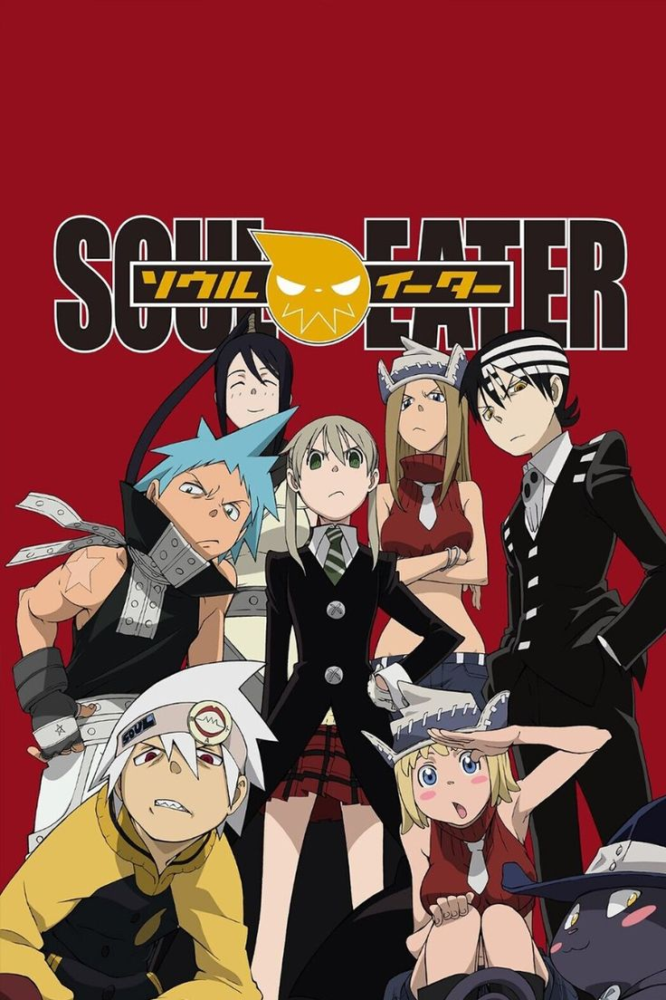
Soul Eater
Atsushi Ohkubo | Fantasy
Para siswa akademi senjata dan meister bekerja sama mengumpulkan jiwa untuk menciptakan Death Scythe.
Tahun terbit: 2004 | Status: Completed
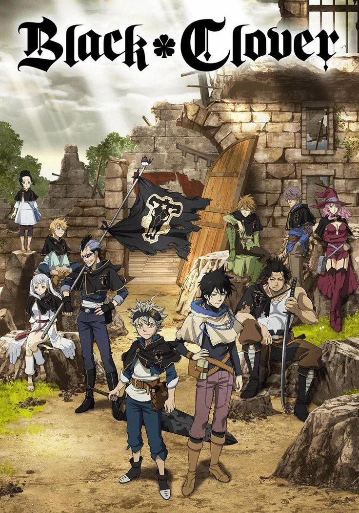
Black Clover
Yuki Tabata | Fantasy
Asta, seorang anak tanpa sihir, bertekad menjadi Wizard King di dunia yang menjadikan sihir sebagai bagian penting kehidupan.
Tahun terbit: 2015 | Status: Completed
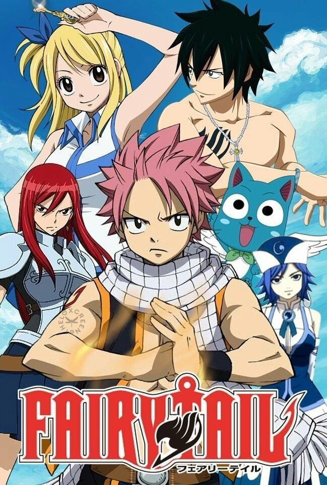
Fairy Tail
Hiro Mashima | Adventure
Lucy Heartfilia bergabung dengan guild penyihir Fairy Tail dan menjalani berbagai misi bersama teman-temannya.
Tahun terbit: 2006 | Status: Completed
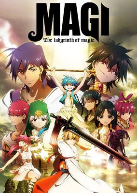
Magi: The Labyrinth of Magic
Shinobu Ohtaka | Fantasy
Aladdin menjelajahi dunia penuh dungeon, kerajaan, dan kekuatan misterius bersama teman-temannya.
Tahun terbit: 2009 | Status: Completed
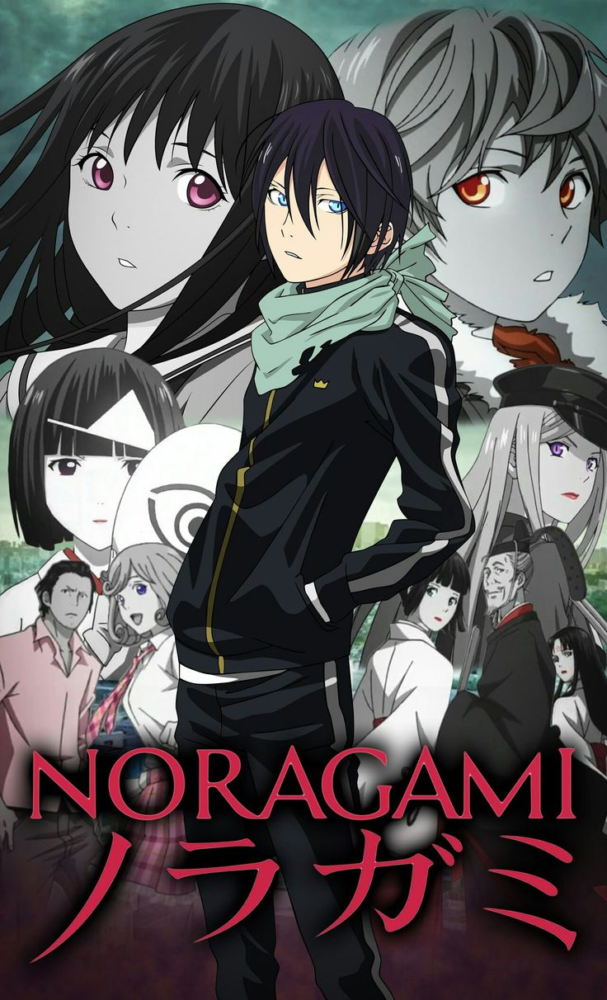
Noragami
Adachitoka | Supernatural
Yato adalah dewa kecil yang menerima pekerjaan sederhana sambil berusaha membangun tempat bagi dirinya di dunia para dewa.
Tahun terbit: 2010 | Status: Completed

Fruits Basket
Natsuki Takaya | Romance
Tohru Honda tinggal bersama keluarga Sohma dan mengetahui rahasia kutukan zodiak yang mengikat keluarga tersebut.
Tahun terbit: 1998 | Status: Completed
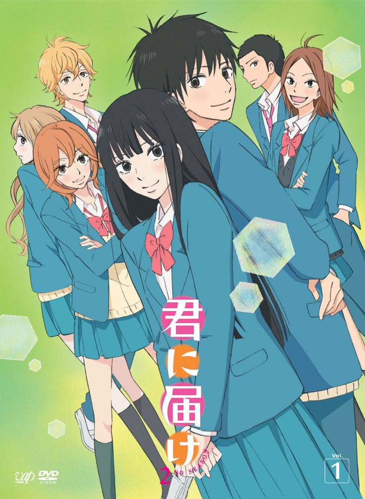
Kimi ni Todoke
Karuho Shiina | Romance
Sawako Kuronuma yang pemalu perlahan membangun persahabatan dan hubungan romantis setelah bertemu teman sekelasnya.
Tahun terbit: 2005 | Status: Completed
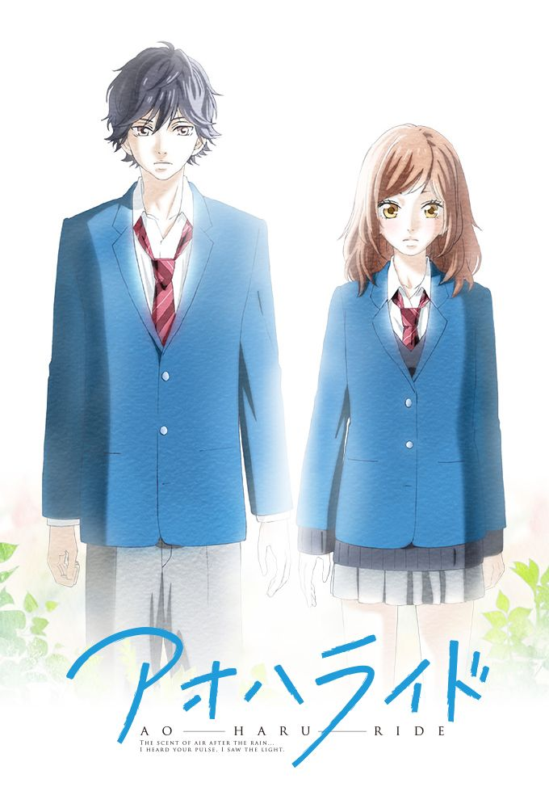
Ao Haru Ride
Io Sakisaka | Romance
Futaba bertemu kembali dengan cinta pertamanya saat SMP dan mencoba memahami perubahan yang terjadi pada diri mereka.
Tahun terbit: 2011 | Status: Completed
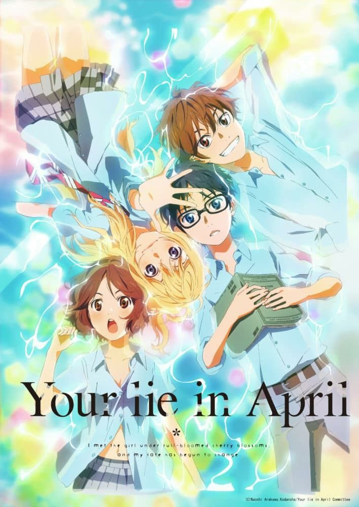
Your Lie in April
Naoshi Arakawa | Drama
Kousei Arima, pianis muda yang kehilangan kemampuannya mendengar musik, kembali menemukan semangat melalui seorang pemain biola.
Tahun terbit: 2011 | Status: Completed
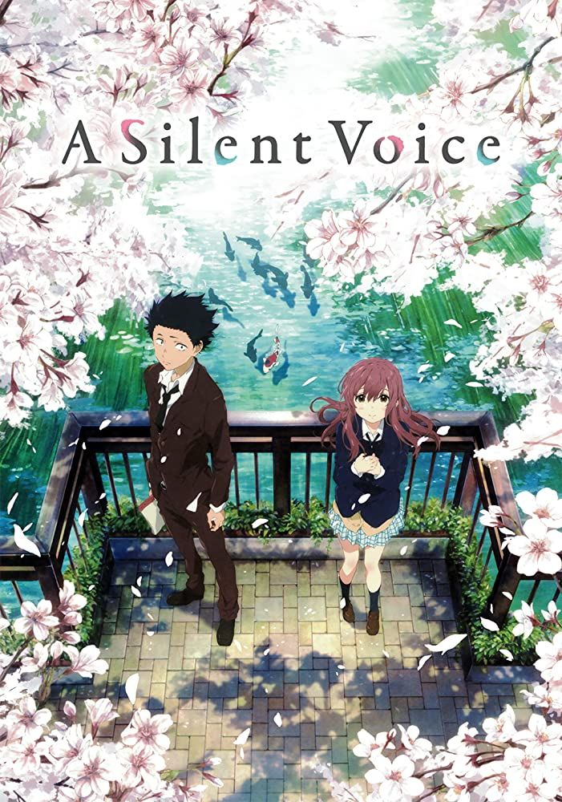
A Silent Voice
Yoshitoki Oima | Drama
Shoya Ishida berusaha menebus kesalahan masa lalunya setelah bertemu kembali dengan Shoko Nishimiya, teman sekolah yang tuli.
Tahun terbit: 2013 | Status: Completed
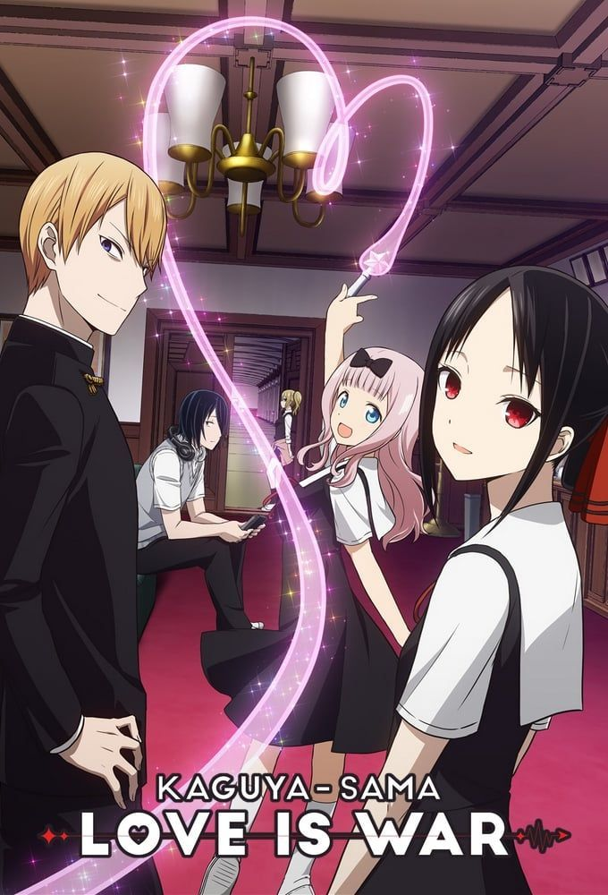
Kaguya-sama: Love Is War
Aka Akasaka | Comedy
Dua anggota OSIS yang saling menyukai terlibat dalam persaingan strategi agar pihak lain mengungkapkan perasaan lebih dulu.
Tahun terbit: 2015 | Status: Completed
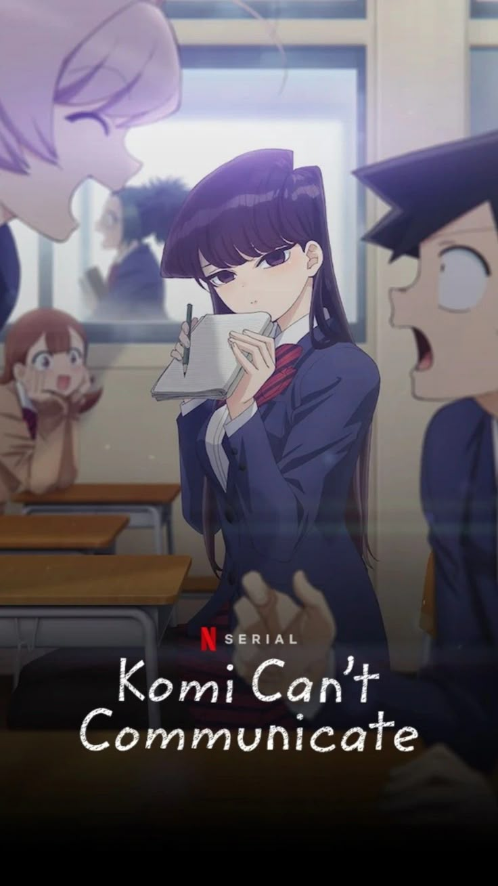
Komi Can't Communicate
Tomohito Oda | Comedy
Shoko Komi ingin memiliki seratus teman, tetapi kesulitan berkomunikasi membuatnya memulai perjalanan bersama Tadano.
Tahun terbit: 2016 | Status: Completed
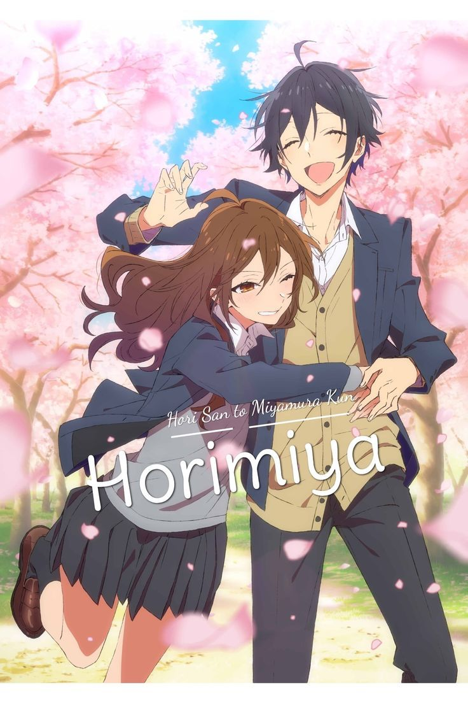
Horimiya
HERO, Daisuke Hagiwara | Romance
Kyoko Hori dan Izumi Miyamura menemukan sisi lain satu sama lain di luar penampilan mereka di sekolah.
Tahun terbit: 2011 | Status: Completed
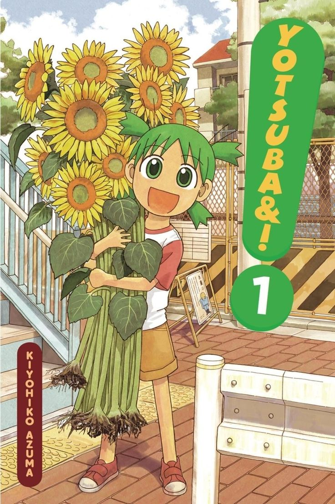
Yotsuba&!
Kiyohiko Azuma | Slice of Life
Yotsuba, anak kecil yang penuh rasa ingin tahu, menemukan hal-hal baru dalam kehidupan sehari-hari bersama keluarga dan tetangganya.
Tahun terbit: 2003 | Status: Ongoing
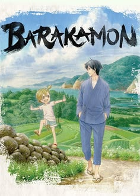
Barakamon
Satsuki Yoshino | Slice of Life
Seorang kaligrafer muda pindah ke pulau kecil dan belajar memahami kehidupan melalui interaksinya dengan warga setempat.
Tahun terbit: 2008 | Status: Completed
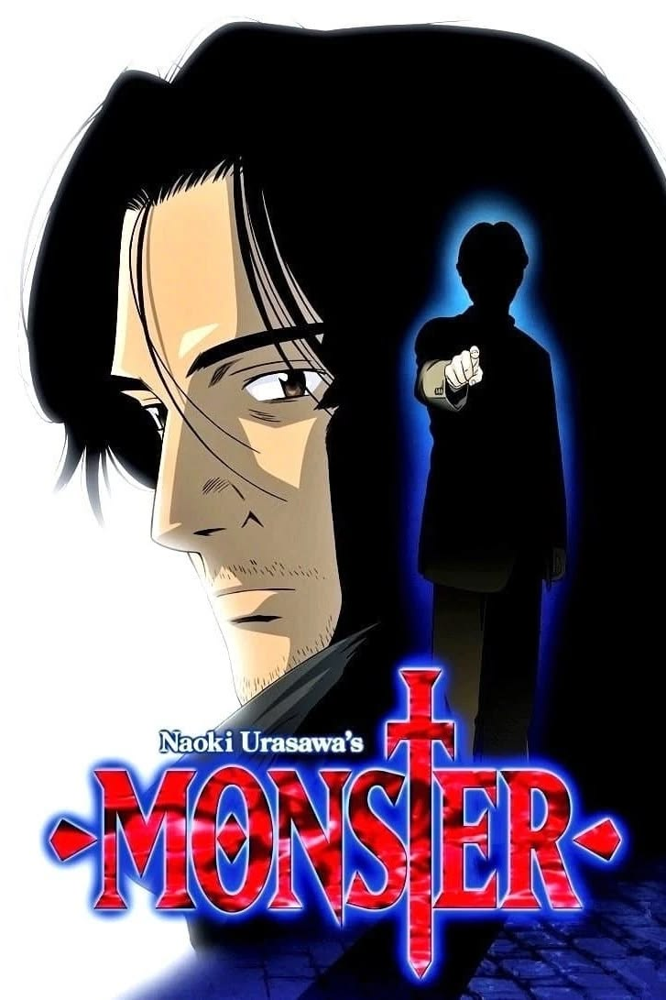
Monster
Naoki Urasawa | Mystery
Dr. Kenzo Tenma menghadapi konsekuensi dari keputusan medisnya ketika ia terlibat dalam kasus pembunuhan berantai.
Tahun terbit: 1994 | Status: Completed
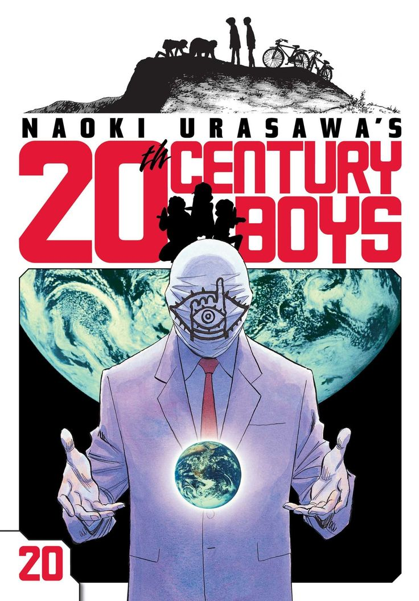
20th Century Boys
Naoki Urasawa | Mystery
Sekelompok teman masa kecil menyadari bahwa simbol dan cerita buatan mereka berkaitan dengan ancaman besar di masa depan.
Tahun terbit: 1999 | Status: Completed
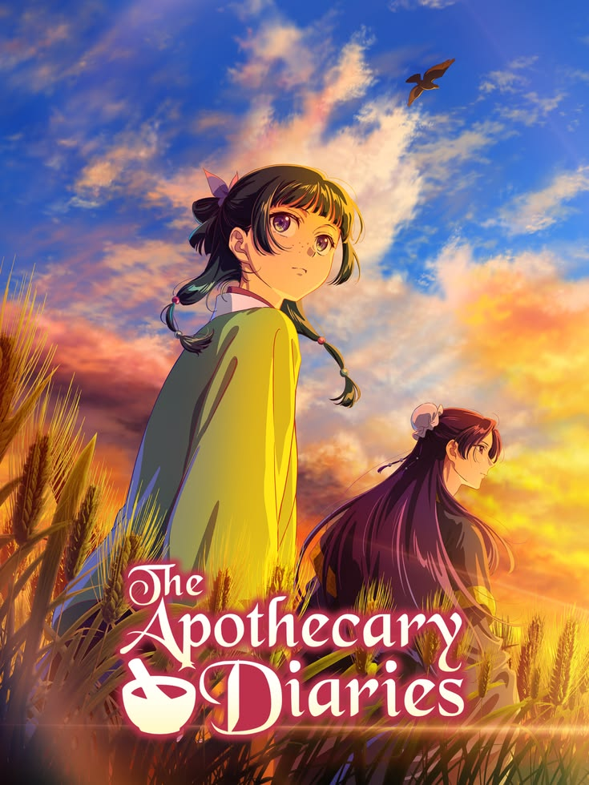
The Apothecary Diaries
Natsu Hyuuga | Drama
Maomao, seorang gadis yang ahli obat-obatan, bekerja di istana kekaisaran dan memecahkan berbagai misteri.
Tahun terbit: 2017 | Status: Ongoing
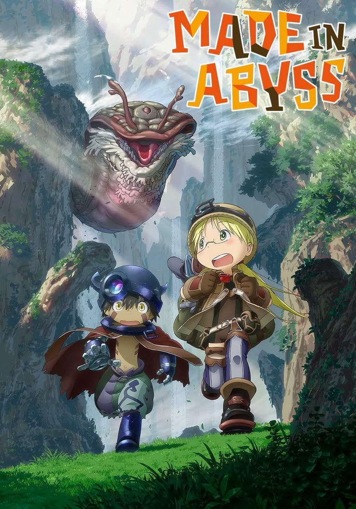
Made in Abyss
Akihito Tsukushi | Adventure
Riko dan robot bernama Reg menjelajahi jurang raksasa yang menyimpan peninggalan serta bahaya misterius.
Tahun terbit: 2012 | Status: Ongoing
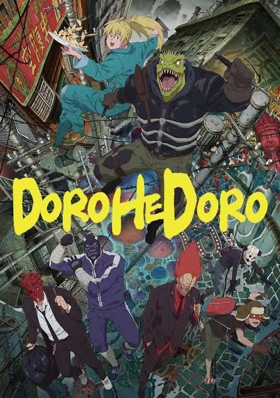
Dorohedoro
Q Hayashida | Fantasy
Caiman, pria berkepala reptil, mencari penyihir yang mengubah tubuhnya sambil mengungkap rahasia dunia yang kacau.
Tahun terbit: 2000 | Status: Completed

Golden Kamuy
Satoru Noda | Adventure
Seorang veteran perang bekerja sama dengan gadis Ainu untuk mencari harta emas tersembunyi di Hokkaido.
Tahun terbit: 2014 | Status: Completed